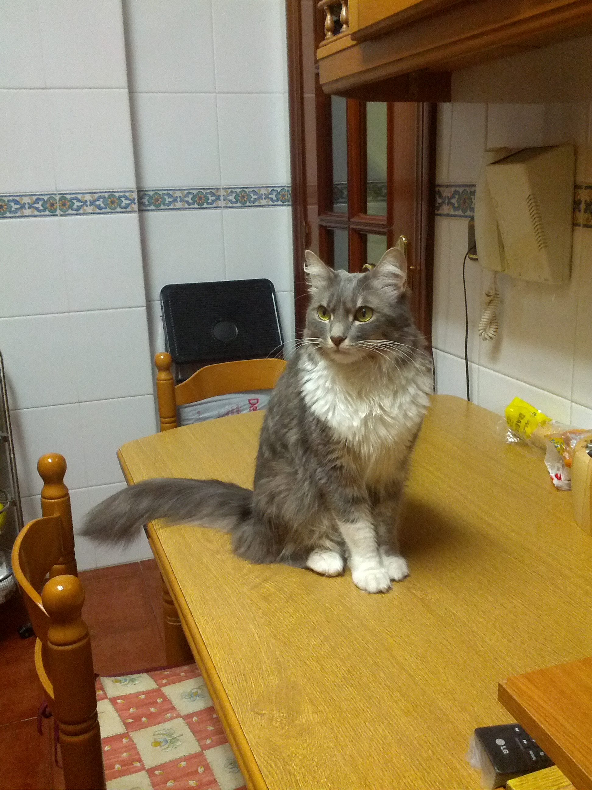

On monday I put this blog up and running, but I didn't liked any of the themes , so... yesterday when I woke up (Currently I'm searching for a Python developer job) I thought that I had to create a new theme, this theme in my mind was very readable, clear and simple, and suddenly the Flask documentation came to my mind. So I picked up the CSS and start adding and deleting things.
The theme is the one that is currently styling this blog. I added some useful features like inline code representation for tt (yes that representation) in reStructuredText. I also added align-center class for the images.
The result is this theme named Iris (Iris is my cat). The source code is in github
To install there are two ways:
- You can clone this theme in your pelican themes folder (is in the pelican installation in themes directory) next add THEME = "iris" to your pelican settings
- Download the theme where you want and point directly to that path, for example THEME = "/my/path/to/theme/iris"
I hope you liked.
Extra: Iris (the cat) photo:
